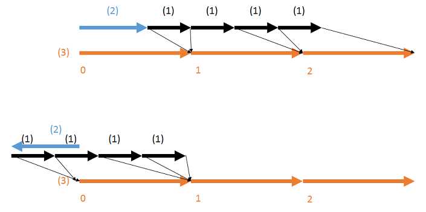

基础设置¶
概述¶
在此，你可以为粒子节点设置一些全局参数，例如名字、生成粒子的数量和一些其他设置。
参数¶

“基础设置”窗口
可见性¶
控制这个节点生成的粒子是否要被渲染到窗口中。如果勾选它，粒子将会可见。注意，如果没有勾选，即便输出到游戏中，粒子也不会被渲染。（译注：和游戏内的说明相矛盾）
名称¶
设置显示在节点树中的名字。它的作用仅仅是，当你的节点数中有许多节点时，便于管理节点。它完全不影响粒子的行为。
生成数量¶
设置这个节点生成的粒子的最大数量。你可以选择正无穷以无限生成粒子（或者直到其他条件设置停止了粒子的生成）。然而，当在另一个内嵌了Effekseer的程序中播放特效时，注意除非触发了停止特效的函数，否则“正无穷”的特效将不会结束。
生成启用¶
指定开始播放时是否启用生成。
继承位置¶
设置父粒子的位置如何影响这个节点生成的粒子。请参照接下来的小节以获得关于继承的信息。
仅生成时 - 跟随父节点¶
子粒子移动以跟随父粒子。 可以控制这个行为的速度和转向。
继承旋转¶
设置父粒子的旋转如何影响这个节点生成的粒子。请参照接下来的小节以获得关于继承的信息。
继承缩放¶
设置父粒子的缩放如何影响这个节点生成的粒子。请参照接下来的小节以获得关于继承的信息。
继承**¶
始终¶
它表示持续的继承，每当父粒子的位置变化时，子粒子也立刻更新变化。如果父粒子被移除，父粒子消失时的值将成为之后被子节点继承的值。
仅生成时¶
仅在子粒子生成时一次性地用继承的值初始化子粒子的值。
从不¶
该值不会被继承。无论父粒子的值是什么，子粒子的行为仅取决于子节点的参数。
生命周期结束后销毁¶
当“生命周期”中设置的帧数结束时，粒子将被移除。如果不被勾选，粒子将不会在生命周期结束后被移除。
跟随父节点销毁¶
当父粒子移除时，子粒子也会被移除。
子节点全部销毁时销毁¶
如果一个父粒子不存在子粒子，而且未来也不可能生成子粒子，则删除父粒子。
生命周期¶
设置粒子从生成到移除之间经过的帧数。然而，如果未选择“生命周期结束后销毁”，这个参数就没有作用。
生成模式¶
选择“连续”或“触发器”生成。 “连续”使用生成速率，“触发器”使用生成触发器和每次触发生成数量。
生成速率¶
设置粒子生成的速率。表示一个粒子生成后，再生成下一个粒子时需要经过的帧数。你可以设置一个小于1的值，在这种情况下每帧就会生成多个粒子。 仅在“连续”模式下使用。
生成开始时间¶
设置从父粒子生成到子粒子第一次生成时需要经过的帧数。
生成开始时间也可以设置为负数值。但应该在负数时间生成的粒子事实上会在第0帧生成。
下面的图表显示了生成速率、生成开始时间和时间的关系。(1)是生成速率，(2)是生成开始时间，(3)是时间（以帧为单位）。当经过了生成开始时间后，粒子开始生成。但是所有在负数时间内生成的粒子事实上在第0帧才被生成。

开始生成的触发器¶
设置触发粒子生成的触发器。
如果设置了一个触发器，那么在触发器信号发送前，粒子不会生成。
如果设置为默认的“无”，那么无需触发器信号，粒子也会开始生成。
停止生成的触发器¶
设置停止粒子生成的触发器。
如果设置了一个触发器，那么在触发器信号发送时，粒子会停止生成。
如果设置为默认的“无”，那么触发器信号不会停止粒子的生成。
生成触发器¶
当生成模式为“触发器”时，指定用于生成粒子的触发器编号。
每次触发生成数量¶
当生成模式为“触发器”时，指定触发一次生成的粒子数量。
触发器删除¶
设置删除粒子的触发器。
如果设置了一个触发器，那么在触发器信号发送时，现存的粒子会被删除。
如果设置为默认的“无”，那么触发器信号不会删除粒子。
而且，如果你将基础渲染设置中的淡出设置为在销毁后淡出，那么在触发器信号发送时，粒子会被淡出。
触发器类型除了触发器0-3外，还可以选择“父节点消失时”和“父节点碰撞时”。